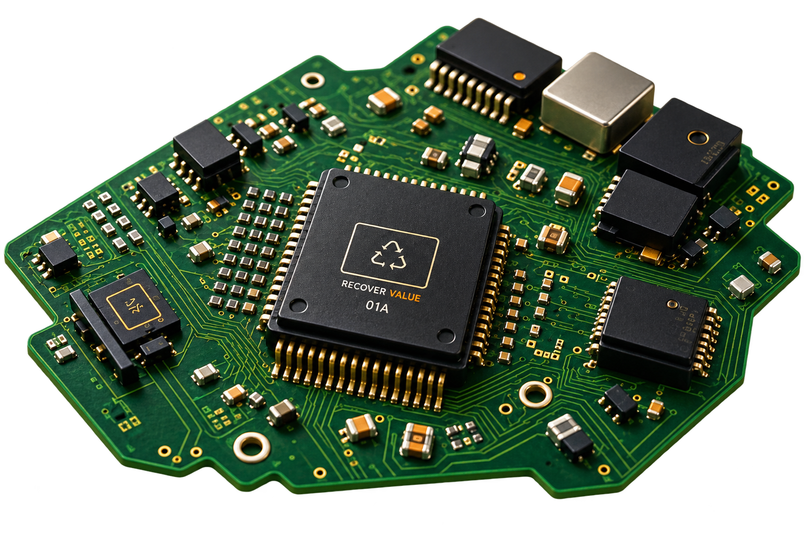

Recover Value From Every Usable Component
A device may have reached the end of its useful life. Its components may not have.

Unlocking Value Through Parts Harvesting
When a complete electronics product is no longer commercially viable, valuable components can still remain within the asset. Fuevation supports component recovery opportunities before assets move to material recycling.
Our Approach
Fuevation brings a focused solution for parts harvesting, helping businesses address the commercial, operational and lifecycle challenges associated with their electronics assets—without exposing the proprietary mechanisms behind the service.
What We Handle

Electronic components

Displays & cameras

PCBs & electronics

Mechanical components

Battery-related components

Accessories & small parts
Value Delivered

Higher recovery potential

Greater component reuse

Reduced premature material recycling

Additional value from end-of-life assets

Support for circular electronics
Industries We Serve
Refurbishers

Repair ecosystems

Manufacturers

Distributors

Electronics recovery businesses

Enterprises
Related Solutions


Frequently Asked Questions
Recovery of usable components from electronics that may no longer be viable as complete products.
Usable components can sometimes retain economic value and support continued product repair or reuse.
No. Parts harvesting preserves component-level value, while recycling focuses on material recovery.
Electronics are assessed to identify usable components that can be recovered, tested, graded and directed toward reuse.
Displays, cameras, PCBs, electronic components, mechanical parts and other usable components can be considered.
Yes, damaged or non-functional devices may still contain components suitable for recovery.
Yes, recovered components can support repair, refurbishment and other reuse requirements.
Yes, suitable end-of-life devices can be assessed for component recovery before material recycling.
Recovering usable components can reduce premature material recycling and support greater resource reuse.
Refurbishers, repair ecosystems, manufacturers, distributors, recovery businesses and enterprises can use parts harvesting solutions.
Ready to recover more value from your electronics assets?
Tell us what you are looking to recover, manage or optimize. Our team will help identify the right solution.